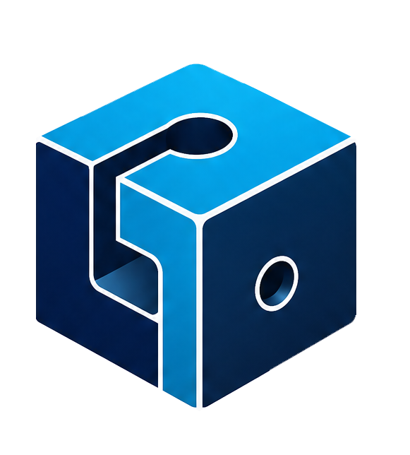

Repair File
Restore corrupted or damaged CAD files. Analyze structure, verify vertices and faces, and recover your 3D models.
ArtiFix is the universal free converter for 3D and CAD files. Over 50 supported formats: STL, OBJ, PLY, GLB, GLTF, FBX, DAE, DXF, 3D PDF and many more. No installation, no registration.

Quick shortcuts to the conversions most searched by our users. Click for the complete guide.
Convert STL to OBJ free, online, without installing software.
Learn how →Turn your DXF CAD drawings into shareable PDFs.
Learn how →Create interactive 3D PDFs from your STL models, without CAD software.
Learn how →Convert OBJ to STL for 3D printing in seconds.
Learn how →Restore damaged or corrupted STL files with ArtiFix.
Learn how →View 3D models directly in your browser, for free.
Learn how →Looking for another conversion?
🚀 Open ArtiFix — 50+ formats supportedFour professional tools, one free platform.
Restore corrupted or damaged CAD files. Analyze structure, verify vertices and faces, and recover your 3D models.
Convert between 12+ 3D formats: STL, OBJ, PLY, GLB, GLTF, FBX, 3MF, DAE, WRL, OFF, DXF and 3D PDF. All possible combinations.
View your models directly in the browser, without installing software. Rotate, zoom and inspect every detail.
Export your models to 3D PDF, the universal format to share projects with anyone, even without CAD software.
From mesh formats to CAD documents, to GIS: ArtiFix reads and writes virtually anything.
DXF
STL · OBJ · PLY · GLB · GLTF · FBX · 3MF · DAE · WRL · OFF · U3D
IFC
SHP · GeoJSON · KML · GPX
SVG
PDF · DOCX · XLSX
All services are accessible at no cost. No subscription, no paywall. You can support the project with an optional donation.
Your files are processed in memory and not stored on our servers. No tracking, no sharing with third parties.
No installation. Works directly from your browser, on Windows, Mac, Linux, tablet and smartphone.
Independent Italian project, developed with passion for engineers, designers, students and 3D modeling enthusiasts.
Companies and professionals who support ArtiFix and make its continuous development possible.
Become an ArtiFix sponsor starting from a free donation. Your brand will be visible for 30 days in the app's sidebar and on this page.
🤝 Become a SponsorYes, ArtiFix is completely free. All conversion, repair and visualization services are accessible at no cost. You can support the project with an optional donation, but it is not required.
ArtiFix supports over 50 file extensions. You can convert between STL, OBJ, PLY, GLB, GLTF, FBX, 3MF, DAE, WRL, OFF, DXF and export to 3D PDF. It also supports DXF (2D CAD), IFC (BIM), geospatial formats (SHP, GeoJSON, KML, GPX), SVG and documents.
ArtiFix cannot directly open proprietary formats (DWG, SKP, RVT) because they require commercial libraries. However, simply export the file to DAE (Collada) or OBJ from the original software (AutoCAD, SketchUp, Revit) to access all ArtiFix services, including conversion to STL, 3D PDF and other formats. Learn how →
No. ArtiFix works entirely in your browser. Upload the file, choose the target format and download the result. No installation required — it also works from tablets and smartphones.
Yes. Files are processed in memory on the Streamlit Cloud server and are not stored after processing. We do not share your data with third parties.
Yes. Files converted with ArtiFix are yours and you can use them for any purpose, including commercial. We only ask you to respect the license terms of the original files.
You can support ArtiFix with a free donation. In return, we show your logo for 30 days in the app's sidebar and in the sponsor section of this page. Write to us at info@artifix.it for more information.
For information, collaborations, reports or sponsorship proposals.